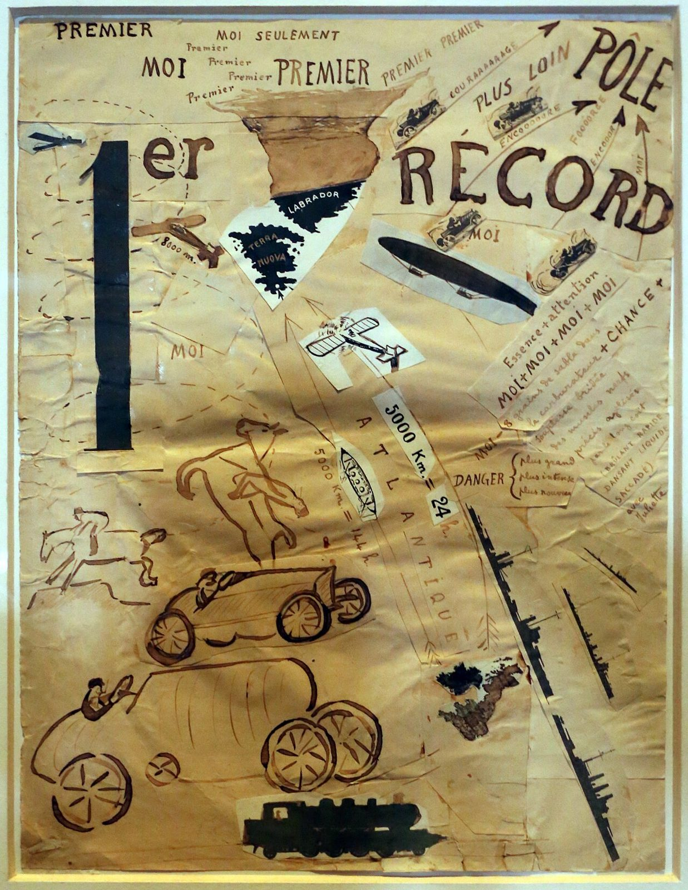

References / Illustration / 520
Parole in libertà (premier record)
A words-in-freedom sheet by F. T. Marinetti that mixes hand lettering, cut-out printed type, maps, cars, aeroplanes, and an airship to celebrate the first record of speed and distance.
- Source
- Wikimedia Commons: Filippo Tommaso Marinetti, parole in libertà (premier record), 1916 (coll. priv.)
- Creator
- Filippo Tommaso Marinetti
- Made
- 1916
- Style
- Italian Futurism (agent-proposed, not yet reviewed by a person)
- Moods
- Exuberant, fast, loud
- Evidence
- Downloaded and inspected the Commons file (original 1652 × 2136 px; stored at 1237 × 1600 px). It is a photograph by the Commons user Sailko, taken on 26 June 2017 at the exhibition Intuition at the Palazzo Fortuny, Venice. The file title says the work is in a private collection. The photo is taken through glazing; the frame and slight reflections are visible.
- Reviewed
- Rights
- Open license, stored. License: CC-BY-3.0. Rights policy
,_1916_(coll._priv.).jpg){kind=link}
Context
The Commons file names the work parole in libertà (premier record), 1916, in a private collection, and records that it was photographed in the exhibition Intuition at the Palazzo Fortuny, Venice, in 2017. Wikimedia Commons,_1916_(coll._priv.).jpg).
Observed
- A tall black “1” cut from paper and a hand-lettered “er” and “RÉCORD” in brown ink dominate the upper half.
- At the top, “PREMIER” and “MOI” are written many times in different sizes and in both capitals and lower case, running off at slight angles.
- Arrows and dashed lines point upward to the right toward the word “PÔLE”; along them run stretched words such as “COURAAAAAAGE” and “ENCOOOOORE”.
- Cut-out printed pictures of cars, an airship, a biplane, a locomotive, and a map of Labrador and Newfoundland are pasted at different angles.
- Brown ink drawings of racing cars, a horse and rider, and a running figure fill the lower half.
- A black jagged line runs diagonally down the right side; the words “5000 Km” and “ATLANTIQUE” follow another diagonal.
- The palette is brown ink and black on aged buff paper.
Why it belongs
The sheet treats a page as a map of effort and speed: records, distances, and machines are joined by arrows. The repeated “MOI” and “PREMIER” make the egotism of the record into typography.
Hand lettering, printed fragments, and pictures sit together without a grid, which is the core of the words-in-freedom method.
Borrow
Make one number or word much larger than everything else and let the rest orbit it.
Repeat a short word at many sizes to build a chant.
Join words with arrows and dashed paths so the reading order becomes a route.
Measured
Machine-extracted by tools/image-traits.py on . Full measurement.
- Mean chroma
- 0.21
- Palette
- #c8c79e 21%
- #b5ad82 10%
- #9d885a 9%
- #977d4b 8%
- #b1a372 6%
- #947239 5%
- #c2ba89 4%
- #846332 4%

